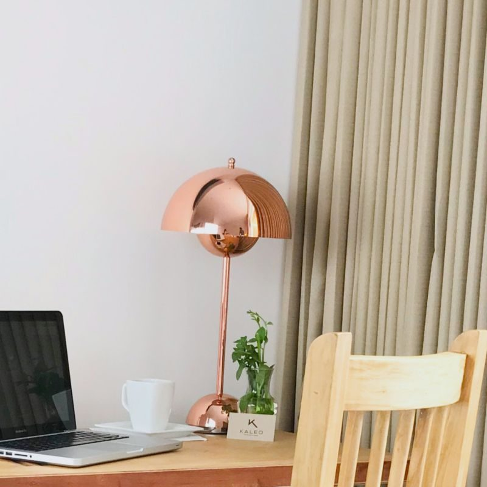

Nava y la cafetería
Inicio / Nava
Nava
De la huerta a la mesa
El restaurante de Kaleo trabaja con lo que da la temporada, los productores salvadoreños y la huerta del propio hotel. La cafetería, al lado, sirve café de finca de la mañana a la noche.
El desayuno para huéspedes se sirve aquí, de 6:30 a 10:30. A mediodía y por la noche, una carta corta abierta también al público, con reserva.
Horarios
DesayunoTodos los días · 6:30 – 10:30
Almuerzo y cenaTodos los días · 12:00 – 22:00
CafeteríaTodos los días · 7:00 – 20:00
Servicio a la habitaciónDesayuno y carta ligera en horario de cocina
Una semana en la carta
La carta cambia con lo que hay. Esto es una muestra de una semana cualquiera.
Desayuno KaleoHuevos de traspatio, casamiento, plátano, fruta de temporada y pan del día
Bowl de la huertaHojas y vegetales del jardín, semillas, huevo pochado
Sopa de frijol con lorocoLa de siempre, con crema y tortilla hecha a mano
Pollo de campo al carbónCon chirmol, ensalada de tomate y aguacate
Pesca del díaA la plancha, con vegetales asados y hierbas del jardín
Semifrío de marañónFruta de temporada y café de finca
Abierto también al público, con reserva.

La cafeteríaLa cafetería
Café de especialidad de fincas de Apaneca y Chalatenango, métodos de filtrado, repostería del día e infusiones de hierbas.
- Enchufes, Wi-Fi de fibra y silencio para trabajar
- Abierta al barrio, de 7:00 a 20:00
- Grano para llevar, de tostadores salvadoreños